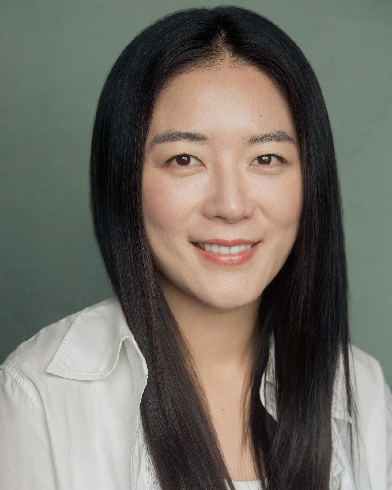

Actor · Theatre Director · Writer · Cultural Educator
Founder & Artistic Director, Nangman Theatre
Seoul · London · Riyadh
I make theatre that travels between languages — and write about the cultures it crosses. For me, a stage is a place where different worlds can exist simultaneously, in tension and in conversation. I am drawn to what is lost in translation, and to what is unexpectedly found.
Hyojung Jung (정효정) is a Korean actor, theatre director, writer, and cultural educator whose work moves across performance, journalism, and academic research. She operates between Seoul, London, and Riyadh, drawing on each context to ask how cultures meet each other on stage and on the page.
She founded Nangman Theatre (낭만씨어터) in Seoul in 2016. The next year the company was selected as a Seoul Youth Arts Group (서울청년예술단) — one of a small cohort backed by the city, with ₩50,000,000 in public funding — and carried a single obsession across all 25 districts of Seoul: literature, read aloud and set to music. For ten years she has taken Korean and world literature — Han Kang, Gi Hyeong-do, Stendhal, Barthes, and others — and staged it as music-reading theatre: a reading carried by live song and a single piano.
She moved to London in 2019 to immerse herself in Western theatre culture and further develop her expertise in musical theatre. During her time in the UK, she also gained experience across the media industry, working as an actor in film, commercial productions, and voice-over projects. Since 2024, Hyojung has been based in Riyadh as Cultural Affairs Instructor and Events Coordinator at the King Sejong Institute, Prince Sultan University. Alongside her teaching and events work, she conducts a Saudi women's choir. In 2025 she was invited to speak at Korean Film Week Saudi Arabia.
She writes for KOFICE (Korea Foundation for International Cultural Exchange), for whom she serves as Saudi Arabia correspondent, and for KOFIC (Korean Film Council), for whom she serves as Saudi Arabia & UAE correspondent. Her journalism documents the accelerating cultural exchange between Korea and Saudi Arabia.
In 2025 she began an MA at the Shakespeare Institute, University of Birmingham (2025–2028, expected), asking what survives when a Korean stage claims Shakespeare — what is kept, what is changed, and what is made new. She holds an MA in Musical Theatre from the University of Seoul and a BA in Theatre and Film from INHA University.
2017
Nangman Theatre selected as 서울청년예술단 — one of the City of Seoul's recognised youth arts organisations — following competitive open application.
2017
Public arts grant from the City of Seoul, recognising Nangman Theatre's programme. ₩50,000,000.
2025
Invited to speak at Korean Film Week Saudi Arabia 2025, contributing to the public discourse on Korean screen culture in the Gulf region.
Cultural Affairs Instructor & Events Coordinator — King Sejong Institute, Prince Sultan University, Riyadh 2024–
Conductor, Saudi Women's Choir — King Sejong Institute, Prince Sultan University, Riyadh 2024–
Saudi Arabia Correspondent — Korea Foundation for International Cultural Exchange (KOFICE) 2025–
Saudi Arabia & UAE Correspondent — Korean Film Council (KOFIC) 2026–
MA Candidate — Shakespeare Institute, University of Birmingham 2025–2028 (expected)
Shakespeare Institute, University of Birmingham — MA 2025–2028 (expected)
University of Seoul — MA in Musical Theatre 2017–2019
INHA University — BA in Theatre and Film 2008–2014